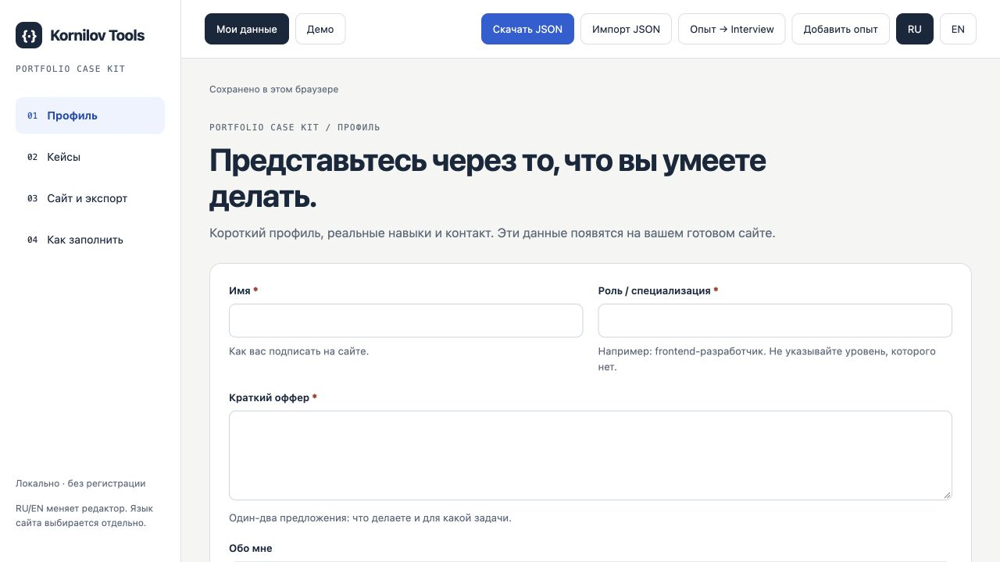

Portfolio Case Kit
Превратите проект в понятный кейс.
Опишите задачу, свой вклад и результат. Получите автономный сайт портфолио и GitHub README.
Форма, которая сохраняет ввод после ошибки
- Задача
- После ошибки терялись введённые данные.
- Мой вклад
- Разделил состояния ввода, ожидания и ошибки.
- Подтверждение
- Проверка повторной попытки. Вымышленный пример.
Демонстрационный пример. Все проекты, люди и числа вымышлены.
Кому подойдёт
Для разработчика, у которого есть проекты, но читателю пока сложно понять, что именно в них сделано.
Что внутри
- Профиль и библиотека проектных кейсов
- Структура: контекст, вклад, решение, доказательства
- Скриншоты PNG/JPEG/WebP и отдельные черновики
- Автономный HTML-сайт в двух темах; публикуются только выбранные кейсы
- GitHub README, JSON и обмен опытом с Interview Proof Kit

Как это работает
Платные инструменты поставляются в ZIP: распакуйте папку и откройте index.html в браузере на компьютере. Установка зависимостей и отдельный аккаунт внутри инструмента не нужны. Храните JSON-копии рабочих данных; мобильная версия предназначена прежде всего для знакомства с продуктом.
Как можно использовать
Для собственного портфолио. Созданный для себя HTML-сайт и README можно публиковать, изменять и размещать на хостинге. Исходный редактор нельзя раздавать или перепродавать.
Полная лицензияРазовая покупка и подписка
Кнопка покупки ведёт на конкретный пост Boosty. Вы можете купить этот продукт разово. Если у вас уже есть подходящая подписка, сначала проверьте доступ в своём аккаунте. Подписки Boosty оплачиваются отдельно и могут продлеваться; смотрите итоговый вариант перед оплатой.
Поддержка и обновления
Вопрос по файлам или работе инструмента? Напишите автору в личные сообщения Boosty. Укажите название, версию и браузер. Список изменений поставляется в ZIP. Будущие обновления и новые продукты не обещаются как часть разовой покупки.